Pada praktikum ini dibuat aplikasi sederhana menggunakan Laravel dengan fokus pada konsep relationship antar tabel. Studi kasus yang digunakan adalah sistem akademik yang terdiri dari mahasiswa, jurusan, dan mata kuliah. Praktikum ini membahas pembuatan migration, model, seeder, controller, route, view, serta query relationship seperti one-to-many dan many-to-many.
Pada modul ini terdapat tiga tabel utama yaitu majors, students, dan subjects. Hubungan antar tabel adalah sebagai berikut:
ERD menunjukkan bahwa jurusan berhubungan dengan banyak mahasiswa, sedangkan mahasiswa dan mata kuliah
terhubung melalui tabel pivot student_subject.
Migration dibuat untuk tabel majors, students, subjects, dan student_subject.
Tabel students memiliki foreign key major_id, sedangkan tabel pivot menyimpan student_id dan subject_id.
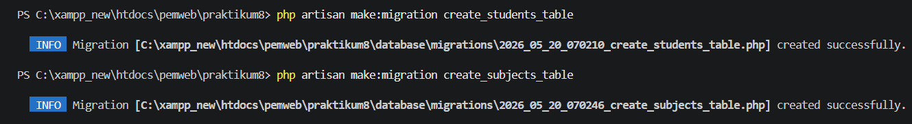
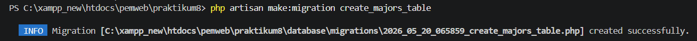
Setelah migration selesai dibuat, perintah berikut dijalankan untuk membentuk tabel pada database.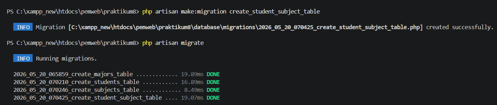
Pada tabel students digunakan foreign key dengan onDelete('cascade') agar data mahasiswa ikut terhapus
ketika jurusan terkait dihapus.
Tiga model dibuat untuk merepresentasikan tabel database, yaitu Major, Student, dan Subject.
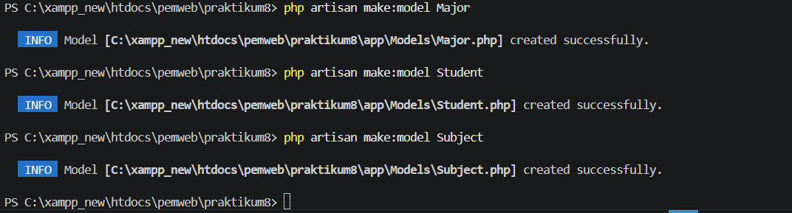
Model Major menggunakan hasMany(Student::class) karena satu jurusan memiliki banyak mahasiswa.
public function students()
{
return $this->hasMany(Student::class);
}
Model Student menggunakan belongsTo(Major::class) untuk jurusan dan belongsToMany(Subject::class) untuk mata kuliah.
public function major()
{
return $this->belongsTo(Major::class);
}
public function subjects()
{
return $this->belongsToMany(Subject::class);
}
Model Subject menggunakan belongsToMany(Student::class) karena satu mata kuliah bisa diambil oleh banyak mahasiswa.
public function students()
{
return $this->belongsToMany(Student::class);
}
Seeder digunakan untuk mengisi data awal jurusan, mata kuliah, dan mahasiswa. Pada StudentSeeder,
setiap mahasiswa diberi mata kuliah secara acak menggunakan relasi many-to-many.
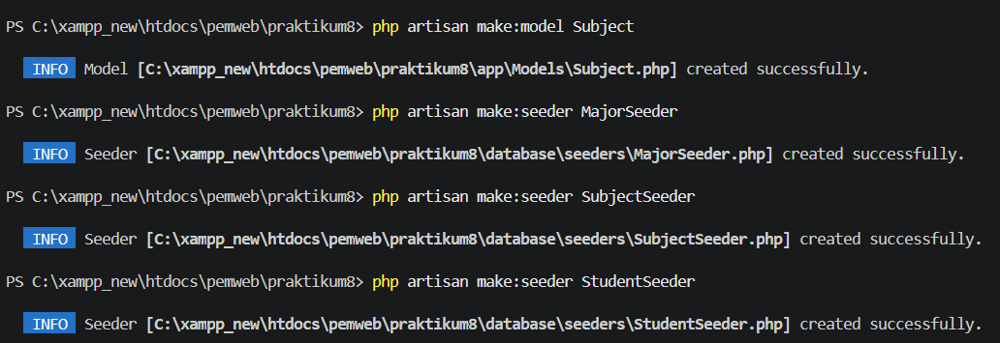
Seluruh seeder dijalankan melalui DatabaseSeeder agar data awal langsung masuk ke database.
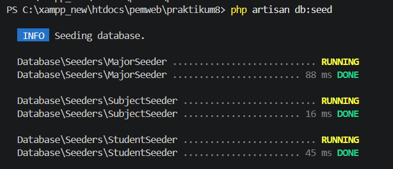
Pada bagian ini penting untuk memastikan data pivot tabel juga terbentuk, karena relasi mahasiswa dan mata kuliah
bergantung pada attach() di seeder.
Controller berfungsi untuk mengatur logika aplikasi. Pada praktikum ini digunakan StudentController
untuk menampilkan data, menyimpan data, mengubah data, dan menghapus data mahasiswa.
Method index() menggunakan eager loading agar data jurusan dan mata kuliah diambil sekaligus dan menghindari N+1 problem.
$students = Student::with(['major', 'subjects'])->get();
Pada method store() digunakan attach() untuk memasukkan data ke pivot table.
Pada method update() digunakan sync() agar relasi mata kuliah lama diganti dengan yang baru.
Pada method destroy() digunakan detach() sebelum data mahasiswa dihapus.
Route resource digunakan untuk menghubungkan URL dengan method controller secara otomatis.
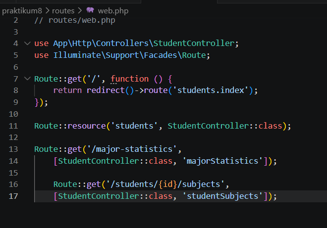
Route ini menghasilkan halaman index, create, store, show, edit, update, dan destroy untuk data mahasiswa.
View dibuat menggunakan Blade Template untuk menampilkan data mahasiswa, jurusan, mata kuliah, dan total SKS. Layout utama menggunakan Bootstrap agar tampilan lebih rapi dan responsif.
Pada halaman index mahasiswa ditampilkan data NIM, nama, jurusan, daftar mata kuliah, total SKS, dan aksi CRUD.
Contoh penggunaan relationship pada view:
{{ '$student->major->name' }}
{{ '$student->subjects->sum("sks")' }}
Setelah migration, seeder, controller, route, dan view selesai dibuat, aplikasi dapat dijalankan menggunakan
perintah php artisan serve. Saat halaman mahasiswa dibuka, sistem menampilkan data mahasiswa beserta jurusan,
mata kuliah, dan total SKS yang diambil.
php artisan serve
Hasil ini membuktikan bahwa relasi one-to-many dan many-to-many berhasil diterapkan pada Laravel.
Pada latihan ini digunakan eager loading di controller dan relationship di view untuk menampilkan semua mahasiswa, jurusan masing-masing, serta mata kuliah yang diambil.
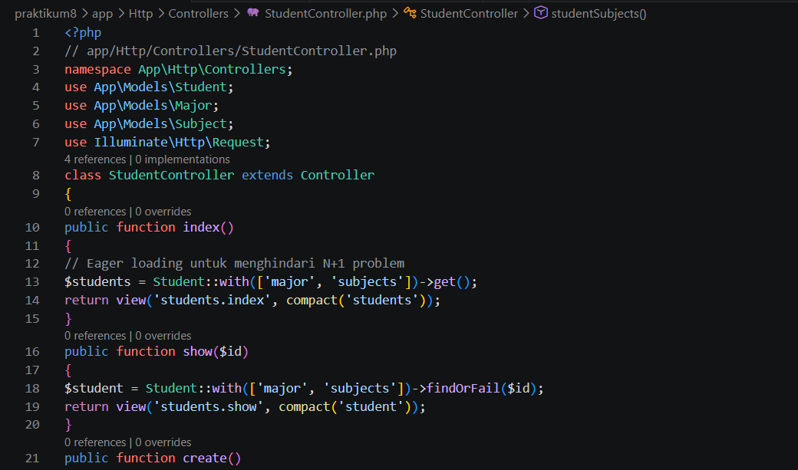
Di view, jurusan ditampilkan dengan $student->major->name dan mata kuliah ditampilkan dengan loop
@foreach($student->subjects as $subject).
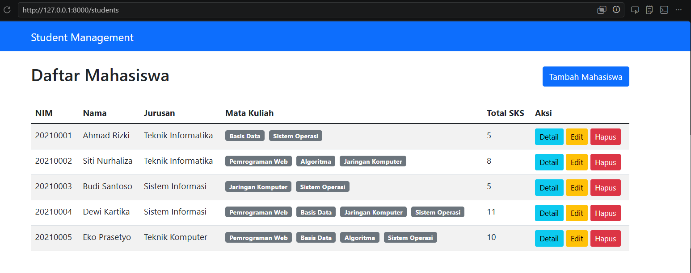
Latihan ini menggunakan withCount('students') untuk menghitung jumlah mahasiswa pada setiap jurusan.
Hasilnya diurutkan dari jumlah terbesar ke terkecil.
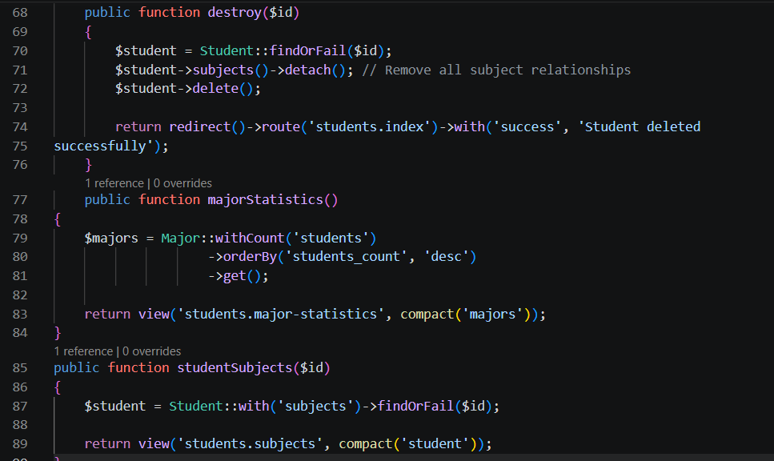
Hasil query ini menampilkan nama jurusan dan jumlah mahasiswa yang dimiliki setiap jurusan.
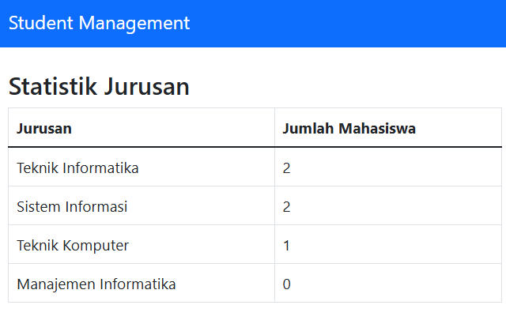
Pada latihan ini data mahasiswa diambil berdasarkan id dengan findOrFail(), lalu relationship subjects ditampilkan.
Student::with('subjects')->findOrFail($id);
View kemudian menampilkan daftar mata kuliah beserta SKS-nya untuk mahasiswa tersebut.
Total SKS dihitung dari collection mata kuliah milik mahasiswa menggunakan fungsi sum('sks').
{{ '$student->subjects->sum("sks")' }}
Nilai total SKS ini ditampilkan pada tabel daftar mahasiswa di halaman index sesuai angka mereka.
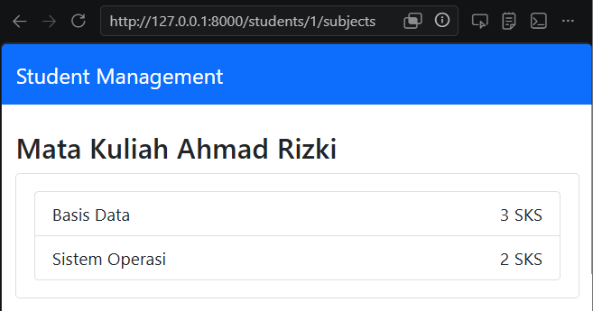
Pengujian dilakukan dengan memastikan data dari seeder muncul pada halaman mahasiswa, jurusan tampil dengan benar, mata kuliah terhubung melalui pivot table, dan total SKS dapat dihitung sesuai data yang ada.
Kendala yang umum terjadi adalah relasi belum benar, pivot table belum terisi, atau nama method relationship tidak sesuai. Karena itu, penulisan nama tabel, foreign key, dan method model harus konsisten.
Praktikum ini memberikan pemahaman tentang relationship dalam Laravel, khususnya one-to-many dan many-to-many. Melalui pembuatan migration, model, seeder, controller, route, dan view, aplikasi akademik sederhana berhasil dibangun. Latihan yang diberikan membantu memahami cara mengambil data relasi, menghitung jumlah data relasi, dan menampilkan data dengan eager loading agar aplikasi lebih efisien.
Lihat Repository GitHub